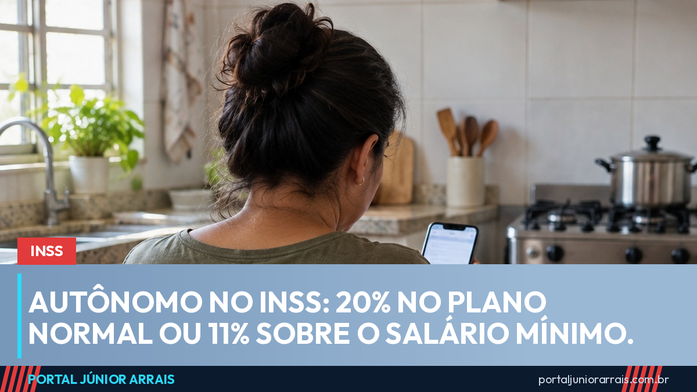

Início › INSS
Calendário do INSS 2026: pagamento de novembro, valores e últimas notícias
Os aposentados, pensionistas e demais beneficiários do INSS recebem o benefício de novembro entre 24 de novembro e 7 de dezembro. A data depende de duas coisas: o valor do benefício (até ou acima de um salário mínimo) e o último número do cartão do benefício, sem contar o dígito que vem depois do traço. Aqui você encontra a data de cada final, o calendário do ano inteiro, os valores de 2026 e as notícias mais recentes, atualizadas todos os dias.
Calendário do INSS: benefícios de novembro de 2026
O benefício de novembro é pago entre 24 de novembro e 7 de dezembro. Quem ganha até um salário mínimo recebe primeiro, um final por dia útil, a partir de 24 de novembro. Quem ganha acima do mínimo começa a receber em 1 de dezembro, com os finais agrupados de dois em dois.
| Final do benefício | Até 1 salário mínimo | Acima de 1 salário mínimo |
|---|---|---|
| Final 1 | 24/11 ter | 01/12 ter |
| Final 2 | 25/11 qua | 02/12 qua |
| Final 3 | 26/11 qui | 03/12 qui |
| Final 4 | 27/11 sex | 04/12 sex |
| Final 5 | 30/11 seg | 07/12 seg |
| Final 6 | 01/12 ter | 01/12 ter |
| Final 7 | 02/12 qua | 02/12 qua |
| Final 8 | 03/12 qui | 03/12 qui |
| Final 9 | 04/12 sex | 04/12 sex |
| Final 0 | 07/12 seg | 07/12 seg |
Calendário do INSS: benefícios de dezembro de 2026
O benefício de dezembro é pago entre 22 de dezembro e 8 de janeiro. Quem ganha até um salário mínimo recebe primeiro, um final por dia útil, a partir de 22 de dezembro. Quem ganha acima do mínimo começa a receber em 4 de janeiro, com os finais agrupados de dois em dois.
| Final do benefício | Até 1 salário mínimo | Acima de 1 salário mínimo |
|---|---|---|
| Final 1 | 22/12 ter | 04/01 seg |
| Final 2 | 23/12 qua | 05/01 ter |
| Final 3 | 28/12 seg | 06/01 qua |
| Final 4 | 29/12 ter | 07/01 qui |
| Final 5 | 30/12 qua | 08/01 sex |
| Final 6 | 04/01 seg | 04/01 seg |
| Final 7 | 05/01 ter | 05/01 ter |
| Final 8 | 06/01 qua | 06/01 qua |
| Final 9 | 07/01 qui | 07/01 qui |
| Final 0 | 08/01 sex | 08/01 sex |
Valores do INSS em 2026
Os números abaixo valem desde 1º de janeiro e estão na Portaria Interministerial MPS/MF nº 13, de 9 de janeiro de 2026:
- R$ 1.621,00salário mínimo, o menor valor pago pelo INSS
- R$ 8.475,55teto, o maior valor de aposentadoria ou pensão
- 3,90%reajuste de quem ganha acima do mínimo
- R$ 1.621,00valor do BPC/LOAS para idoso ou pessoa com deficiência
Quem ganha exatamente um salário mínimo teve o aumento do próprio mínimo. Quem ganha mais recebeu o reajuste pela inflação medida pelo INPC. As regras de cada aposentadoria estão no guia da aposentadoria, e as do auxílio-doença no guia dos benefícios por incapacidade.
13º do INSS em 2026
O 13º, que o INSS chama de abono anual, foi antecipado neste ano e pago em duas parcelas, em abril e maio, para quem já recebia benefício. Quem começou a receber a partir de maio entra no calendário normal e recebe o 13º junto com o benefício de novembro, entre 24 de novembro e 7 de dezembro. Quem recebe o BPC/LOAS não tem 13º, porque o BPC é assistencial e não vem de contribuição. Os detalhes estão na matéria 13º do INSS: quem começou a receber depois de maio só recebe em novembro.
Calendário completo do INSS de 2026
Cada linha é o mês do benefício e cada coluna, um final do cartão. A tabela mostra as datas de quem ganha até um salário mínimo. Quem ganha acima do mínimo recebe na data da coluna do final 6 a 0: finais 1 e 6 juntos na coluna 6, 2 e 7 na coluna 7, 3 e 8 na 8, 4 e 9 na 9, e 5 e 0 na coluna 0.
| Benefício de | 1 | 2 | 3 | 4 | 5 | 6 | 7 | 8 | 9 | 0 |
|---|---|---|---|---|---|---|---|---|---|---|
| Janeiro | 26/01 | 27/01 | 28/01 | 29/01 | 30/01 | 02/02 | 03/02 | 04/02 | 05/02 | 06/02 |
| Fevereiro | 23/02 | 24/02 | 25/02 | 26/02 | 27/02 | 02/03 | 03/03 | 04/03 | 05/03 | 06/03 |
| Março | 25/03 | 26/03 | 27/03 | 30/03 | 31/03 | 01/04 | 02/04 | 06/04 | 07/04 | 08/04 |
| Abril | 24/04 | 27/04 | 28/04 | 29/04 | 30/04 | 04/05 | 05/05 | 06/05 | 07/05 | 08/05 |
| Maio | 25/05 | 26/05 | 27/05 | 28/05 | 29/05 | 01/06 | 02/06 | 03/06 | 05/06 | 08/06 |
| Junho | 24/06 | 25/06 | 26/06 | 29/06 | 30/06 | 01/07 | 02/07 | 03/07 | 06/07 | 07/07 |
| Julho | 27/07 | 28/07 | 29/07 | 30/07 | 31/07 | 03/08 | 04/08 | 05/08 | 06/08 | 07/08 |
| Agosto | 25/08 | 26/08 | 27/08 | 28/08 | 31/08 | 01/09 | 02/09 | 03/09 | 04/09 | 08/09 |
| Setembro | 24/09 | 25/09 | 28/09 | 29/09 | 30/09 | 01/10 | 02/10 | 05/10 | 06/10 | 07/10 |
| Outubro | 26/10 | 27/10 | 28/10 | 29/10 | 30/10 | 03/11 | 04/11 | 05/11 | 06/11 | 09/11 |
| Novembro | 24/11 | 25/11 | 26/11 | 27/11 | 30/11 | 01/12 | 02/12 | 03/12 | 04/12 | 07/12 |
| Dezembro | 22/12 | 23/12 | 28/12 | 29/12 | 30/12 | 04/01 | 05/01 | 06/01 | 07/01 | 08/01 |
Últimas notícias do INSS
 Pensão por morte para filho inválido ou com deficiência continua depois dos 21 anos25 de nov. de 2026
Pensão por morte para filho inválido ou com deficiência continua depois dos 21 anos25 de nov. de 2026 Aposentadoria do professor: as regras depois da Reforma, com pontos, idade mínima e pedágio23 de nov. de 2026
Aposentadoria do professor: as regras depois da Reforma, com pontos, idade mínima e pedágio23 de nov. de 2026 Revisão de aposentadoria: prazo de 10 anos para pedir e o que ainda pode ser corrigido20 de nov. de 2026
Revisão de aposentadoria: prazo de 10 anos para pedir e o que ainda pode ser corrigido20 de nov. de 2026 Reabilitação profissional do INSS: quem é encaminhado, o que recebe e o risco de recusar17 de nov. de 2026
Reabilitação profissional do INSS: quem é encaminhado, o que recebe e o risco de recusar17 de nov. de 2026- Auxílio-reclusão: quem tem direito, carência de 24 meses, limite de renda e valor8 de nov. de 2026
- Aposentadoria da pessoa com deficiência: quanto tempo cada grau exige e como é o cálculo2 de nov. de 2026
- INSS em atraso: quando dá para pagar a contribuição e quando ela conta para a carência24 de out. de 2026

Autônomo no INSS: plano de 20% ou de 11%, o que cada um cobre e como pagar20 de out. de 2026
Outros benefícios
Perguntas frequentes
Qual número do cartão define a data?
É o último algarismo do número do benefício, sem contar o dígito verificador, aquele que vem depois do traço. Se o número termina em 123.456.789-0, o final que vale é o 9.
Por que quem ganha mais recebe depois?
O INSS paga primeiro quem recebe até um salário mínimo, nos últimos dias úteis do mês. Quem ganha acima do mínimo recebe nos primeiros dias úteis do mês seguinte, com os finais agrupados de dois em dois: 1 e 6, 2 e 7, 3 e 8, 4 e 9, 5 e 0.
Quanto é o salário mínimo e o teto do INSS em 2026?
O salário mínimo é de R$ 1.621,00, que é também o menor valor pago a aposentados, pensionistas e a quem recebe o BPC. O teto, o maior valor que o INSS paga, é de R$ 8.475,55. Os benefícios acima do mínimo tiveram reajuste de 3,90% em janeiro.
Quando sai o 13º do INSS em 2026?
Neste ano o 13º foi antecipado e pago em abril e maio para quem já recebia benefício. Quem começou a receber a partir de maio recebe o 13º junto com o benefício de novembro, entre 24 de novembro e 7 de dezembro. O BPC/LOAS não tem 13º, porque é benefício assistencial.
O dinheiro não caiu na data. E agora?
Confira primeiro se a data é mesmo a do seu final e da sua faixa de valor. Se a data passou e nada apareceu, o benefício pode estar suspenso, por exemplo por falta de prova de vida ou por revisão. Não pague ninguém para liberar: procure um profissional de sua confiança para olhar o caso.
Cuidado com golpe
Aposentado e pensionista são o alvo preferido dos golpistas. As mensagens mais comuns falam em "revisão liberada", "dinheiro esquecido do INSS", "desconto indevido para devolver" ou "prova de vida pelo link", e terminam sempre pedindo senha, foto do documento, código que chegou por SMS ou um Pix de taxa. Ligação de falso funcionário oferecendo empréstimo consignado também é frequente.
Nenhum órgão do governo cobra taxa nem pede Pix, senha ou foto do cartão para pagar ou liberar benefício. Se o valor vier menor, aparecer um desconto que você não reconhece ou o pagamento parar, não entregue dinheiro a quem promete resolver rápido: procure um profissional de sua confiança para analisar o seu caso.
Fontes oficiais
- INSS: tabela oficial de pagamento de benefícios de 2026
- INSS: calendário de pagamentos de 2026 está disponível
- Portaria Interministerial MPS/MF nº 13, de 9 de janeiro de 2026 (reajuste, teto e salário mínimo)
- Ministério da Previdência: benefícios acima do mínimo reajustados em 3,9%
- Lei nº 8.213/1991 (benefícios da Previdência Social)
Página atualizada em 14 de nov. de 2026. Conteúdo informativo — não substitui orientação individualizada sobre o seu caso.
Júnior Arrais · Editor do Portal Júnior Arrais
Comunicador de Ubá (MG). Escreve todos os dias sobre benefícios sociais, INSS, trabalho e economia do dia a dia, a partir do Diário Oficial, de portarias e de fontes oficiais, em linguagem simples. Conheça a linha editorial e a política de correções do portal.